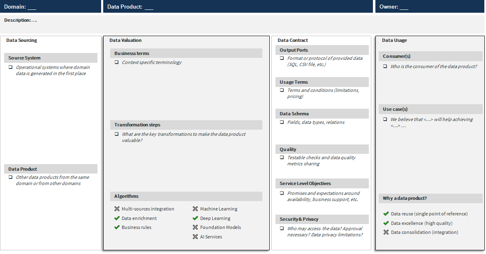
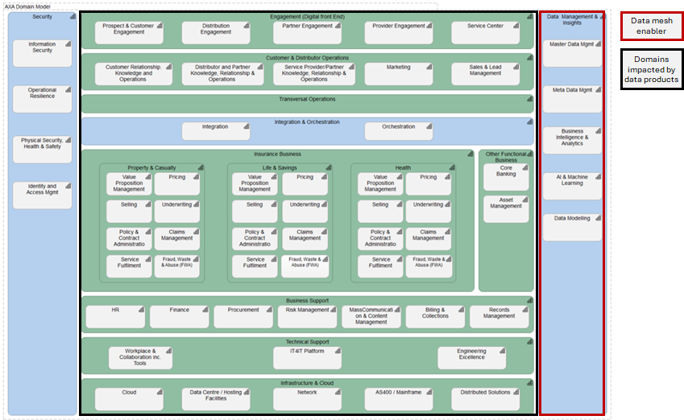

What artefacts are data products?
There is no unique definition of the data product, few examples from internet:
“An important feature of a Data Product is that it is trusted. Consumers will only start using it, and continue to do so, if they can rely on it.” Willem Koenders, leader in data strategy, What’s the big deal about data products?.
Applying design thinking and data driven design mindset, techniques and tools, for e.g. SCRAMPER, Event Storming, Data Product Canvas.
Data product characteristics inspired by The FAIR Guiding Principles for scientific data management and stewardship, Data Mesh Chapter 3. Principe of Data As a Product, Open Data Product Specification.
Over 2024-2026, AXA Entities have planned to accelerate adoption and scaling of data and artificial intelligence (AI), with a focus on scaling organic growth, as well as technical and operational excellence across all AXA businesses.
Unlocking the future with data & AI is expected to contribute to significant underlying earnings ambition by 2026. It combines Entity-level improvements and stronger ability to scale data and AI by leveraging the size of AXA.
Reaching the AXA ambition requires streamlining and strengthening the data and AI use cases, increasing data sharing and data interoperability. In this context, Data Mesh paradigm, introduced by Zhamak Dehghani in 2019, is identified by AXA as a key enabler, articulated with AI governance, AI engineering excellence (including generative AI), and data & AI culture.
Data Mesh is about a managed decentralized analytical data architecture and operating system. This document is the AXA viewpoint that describes how Data Mesh will support the AXA journey towards a global data ecosystem. It set the scene and clarifies our motivation, it provides the first artefacts, definitions, and principles, as requested by AXA Entities in Q2 2024 during interviews.
AXA positions Data Mesh as an enabler. Data Mesh will not generate direct business benefits(top line), but the AXA Data Mesh will ensure that the financial investments in business data and AI use cases will deliver their full value and will accelerate the scaling of future data and AI use cases. The momentum is also the opportunity for AXA Entities and AXA Group to undertake actions to transform and strengthen their existing data foundation and operating system. This document is part of “AXA Data Mesh Common Rules” framework. It targets business domain owners and data experts that will share a common language to discuss with various stakeholders and to pursuit their AXA Data Mesh implementation. It can be used also to communicate externally about the AXA Data Mesh. More detail will be provided in other documents that are part of the framework: AXA Group Data Mesh guiding principles and AXA Group Data Mesh architecture
Data Mesh paradigm is articulated around 4 principles (see below). In this document, we initiate the journey starting from “data as a product” principle. The concept of “data as a product” encourages applying product thinking to data; promotes that data generation should meet data users’ needs and provide a great user experience from discovery to consumption.
AXA Entities’ Chief Data & Analytics Officers are committed to steering not only defensive but also offensive actions to increase business impact from data & AI. At the critical path of delivering business uses cases, the main benefits expected from a “data as a product approach” are:
Data product is one or multiple read-only datasets (collection of data), and potentially models (e.g., machine learning), created (designed, elaborated, and published) to satisfy one or multiple pre-defined business needs. A data product must respect a specific architecture and apply product management and data usability best practices. A data product can be consumed by operational systems, analytical systems, other data products, or end-users, to inform and/or take some actions. Several characteristics of a data product will be used to identify its quality.
A Data Product is considered fully mature when it covers all the properties on the three dimensions: Product Management and Ownership, Architecture, Usability. Some data product may not be fully mature on all dimensions, thus it will be important to track and follow the maturity of data products.
| Property | Description |
|---|---|
| Data product is owned | Data product role is identified and owned. |
| Value driven and consumer centric | Business value is identified; promotion, on-boarding, user experience and retention approaches are defined; collaboration models are defined. |
| Data product terms and conditions | Data product terms and conditions are defined, data product contracts with data product users are defined and managed when applicable (e.g. business critical usage). |
| Finance and operations | Budget, resources allocation and consumption are under control, service levels are monitored, risk is monitored. |
| Property | Description |
|---|---|
| Independently deployable | Data transformation logic, policies and rules that govern data (metadata, code, policies and rules) are encapsulated and managed as a single unit, cf. architecture quantum1 |
| Data updates follow a governed process | Data product is not transactional as it must guarantee a high degree of repeatability for data product users to support various usages. Data product data updates follow a predefined and governed process that must be aligned with user’s needs. |
| Enterprise asset | Data product is registered in the Enterprise application repository, recognized, and governed at enterprise level, including architecture and security governance, and IT service management |
1 Neal Ford, Rebecca Parsons & Patrick Kua - Building Evolutionary Architectures - Architectural Quanta and Granularity
Criteria from Zhamak Dehghani - Data Mesh – Delivering Data-Driven Value at Scale
| Property | Description |
|---|---|
| Discoverable | Metadata are well defined so users can easily search and find the data they need. |
| Addressable | There is a permanent unique address location to locate the data product. |
| Understandable | Data schema is explicit, business rules are documented. |
| Truthful (Trustworthy) | Data quality metrics are available, service levels are defined (availability, data freshness, versioning, etc.), there is a business support (request for information, for change). |
| Natively Accessible | Users can easily access data with their native tools (e.g., reporting tool, notebook). |
| Interoperable | Data product follows the Enterprise data interoperability standard (e.g., naming conventions, data types, protocols) |
| Valuable (on its own) | Business value and possible business use cases are described. |
| Secure | Data access profiles and controls are computational, data retention rules are effective. |
Data Product Terms & Conditions defines the terms and conditions that apply between the data product owner and data product user. It includes business elements (product owner, purpose, support contact, incident and change management, data usage conditions, service levels, etc.), technical elements (data schema, protocol, data timeliness, access type, etc.), financial elements (pricing model, price and billing items, licensing).
Data Product Contract is a formal commitment between the data product owner and a data product user or set of users.
The paradigm shifts from a project driven approach to a product approach where the center of attention is the value of the data product for the users. The direct implication is that a data product certification process must be effective to assess and validate the conformity of data products, including periodic reviews as the situation may change over time. Additional implications:
We have identified six main phases in the data product lifecycle, from ideation to retirement.
| Phase | Description |
|---|---|
| Ideation | The purpose of the ideation phase is to identify pockets of data driven value and to feed the data product backlog. This phase is initiated from business opportunities or pain points: what needs to be done differently? How does this bring a competitive advantage? What estimates, insights and predictions do you need for this uplift? What information enables these predictions and where does it come from? Creating a data product should emerge from delivering a differentiated user experience for identified value and consumers. Data products are built to be scalable and frequently utilized, providing a valuable solution. The scoping phase aims at qualifying data product requirements and assessing business case (feasibility, usability, viability), data sourcing strategy must be considered also at this stage. The data products identified in the ideation phase can be captured in a data product canvas, cf. Appendix A – Data Product Canvas |
| Design | Data is designed to be provided as a product, according to a reference norms and standards. The primary focus is the design of the data interface (data schema, data access profiles, data quality) that must satisfy data consumer needs. A good practice is to mock up the data interface as soon as possible, and to test the user experience and acceptance criteria with key personas (including performance, documentation, tagging, integration, etc.). This phase is fundamental to confirm the product is designed to meet consumer needs and expected benefits. At this stage, we talk about an experimental data product |
| Build | The build phase delivers the code of the data product: data transformation rules, machine learning featurization and training rules, data quality rules, etc. |
| Deployment | The data product is tested to meet the requirements, including Data Product contracts requirements, quality controls, “data as a product” norms and standards, data security and data ops requirements. Once the data product is compliant and approved, it is marketed like a consumer goods product and published to the environment to make it accessible. |
| Usage | The data product is operated and monitored to ensure there is no deviation in service and data quality, and that it still meets the data consumers’ needs and value creation. The service level metrics are published and followed up on. Data product consumers care activities are performed (feedback, surveys) to ensure the adoption of the product, and a sustainable value generation. |
| Retirement | The data product doesn’t meet anymore the business needs, there is no user connection, and it must be retired. |
Designing and operating high-quality data products, in a large organization, requires numerous interactions which can reduce the speed to market and often identify the central team as a bottleneck. Data Mesh approach positions data product ownership with people closest to the data generated from (or used by) operational activities, thereby minimizing the pressure on the central team.
New concepts are introduced here.
Business domain refers to a sphere of activity (e.g. P&C Retail Motor Underwriting, Finance, Risk Management) where people (business, data, and IT experts) have a common knowledge, language, view and understanding of their value chain, and their interactions with other domains.
Domain Owner is a senior stakeholder who has a deep understanding of the domain. The domain owner is accountable for providing business vision, business rules, and expertise related to the domain being modeled. He or she identifies business opportunities with data, ensures data consistency in the domain and data interoperability with other domains. At an organizational level, decentralization means data experts1 are integrated in the business domains. This does not imply always recruiting a whole host of new staff, as many actors are already present and have the required skills, but business domains need to be funded to make it works. This is expected to be balanced by the generated value of the usage of the data internally to the domain and with other domains. Therefore, business value tracking is part of business domain activities.
Decomposition of the Enterprise per domains is more an art than science. In general, fine-grained domains will be found in activity areas that are directly linked to company’s core business(technical excellence, sophistication for competitive advantage); and coarse-grained domains for domains transversally supporting company’s activities. AXA Domain Model2 can be used as a reference for inspiration. The vision of Data Mesh is to integrate analytical activities with operational activities, leveraging a shared domain model. The design of the domains (capabilities, target state, transition states, gaps with the organizational structures) is part of Enterprise architecture activities and not detailed in this viewpoint. 2 AXA-Domain-Model
Business domain owners are not necessarily owners of all data in the domain. Some data will be collected, stored, and processed by the domain but it will come from other Entities and other business domains so the domain using this data is not owner of it. However, the business domains should not redistribute the data collected from other Entities and domains.
Data products owned by domains without a proper organization and technological standards, cannot guarantee data interoperability, data performance (latency), data discoverability and data consistency. In this section we cover the data architecture and operating system capabilities that will enable an effective and efficient collaboration between domains.
Preventing Data Mesh from turning into siloed business domains requires data governance. At AXA, data products are integrated into a multi-domain data infrastructure that provides required IT services consistently across domains. This foundation has several objectives:
Manage data in a homogeneous ecosystem is the ability to ease and control the sharing of data and data usages, at scale between multiple actors (data product owners, data product users, governance bodies). The ability to ease and control the sharing of data drives requirements at both organization and technology levels. At an organizational level, new requirements will have to be integrated in a federated governance:
Data governance model is federated meaning some activities are operated centrally by the federated governance core team for all business domains, while the business domains teams locally operate others.
Federated governance core team is responsible for supplying business domains with global policies, norms, and standards to ensure domain’s data products interoperability, discoverability, and security.
Data governance activities should be automated with code, computational, to decrease data management workload and to increase data and meta data quality. Business domains owners or their representatives are active stakeholders in the steering of central governance activities and outcomes in addition to the Chief Data & Analytics Officer, Chief Technology Officer, Security & Data Privacy Officers.
At a technical level, new requirements will drive the development or use of a data platform to support autonomy of actors in delivering and managing data products.
A data product is designed using the Data Product Factory. The Factory enables the functional and technical design and maintenance of data products. The outcome of the design is articulated around either interface standards such as API design standards or scripts based on the programming languages used by Entities.
A data product is exposed and shared in the Data Product Marketplace. The Marketplace enables the Data Products discovery, understanding, and consumption by consumers. It leverages the data product catalog to ease the metadata-based search and discovery, and the data product contract to ensure data products are built to meet users’ needs. It also enables users to carry out experimental works on data products in which they are interested, within dedicated sandboxes in a data laboratory.
Data Product Catalog is an organized list of data products, accompanied by descriptions (e.g., data schema, data confidentiality classification). It is used to present and reference the data products in a clear and structured manner, making it easier to search for and select specific data product.
Data Laboratory is part of the data product marketplace, it is an environment that provides a set of data services for data product users to test data products: see data (or just data samples) and run queries
At AXA Global scale, this viewpoint defines a new capability to “manage a Group Data Mesh” across AXA domains and AXA Entities. Three business patterns have been identified
Group Data Mesh is an additional architecture and operating model on the top of AXA Entities Data Meshes to orchestrate the exchange of data products across AXA Entities. It implies additional federated layers of data governance and infrastructure to enable cross-Entities exchanges and data products interoperability.
In this Group Data Mesh vision, delivering and leveraging data products at scale is at the core of the transformation, and so an AXA Data Mesh metamodel is required to support the interoperability described above. A first high level AXA metamodel has been elaborated from Data Mesh best practices and AXA interviews, as a starting point for collaboration
Since 2023, there has been a great appetite at AXA to adopt a ‘data as a product’ approach, and several AXA Entities have already launched concrete actions in that direction (e.g., introducing the data product concept in metadata models, creating data products catalogs, conduction data product assessments, hackathon, etc.). However, regarding a larger Data Mesh ecosystem, interviews with AXA Entities in June 2024 identified that global readiness is low. For some digital-native Entities (e.g., AXA Digital Commercial Platform) it is quite natural to embrace Data Mesh and manage data as a product. For other Entities, which are less digital and have a more complex and large landscape, Data Mesh has a more significant impact on their existing socio-technical ecosystem and so is identified as a multi-year transformation journey. Embracing the Data Mesh paradigm implies shifting from a “functional only” prioritization grid to a more balanced multidimensional grid that includes architecture and usability aspects for the data products. A good practice to start the journey towards Data Mesh is to implement “Minimum Viable Data Mesh Products” with limited business use cases, clear business benefits identified and to progressively bring the data products to embrace all the aspects described above. Generating thin layers of integrated data products will enable meeting functional needs while generating value in usability and architecture, thus meeting business needs, learning and continuing the journey. Data Mesh, as described in this document, must be considered as a common north star. It is an enabler to support AXA’s “Unlock the Future” ambition by scaling data and AI use cases. In this journey, many stakeholders will be involved, both intra-Entity and inter-Entities (data sharing, strategic dialogues). This viewpoint introduces the key Data Mesh concepts and roles for AXA that are required for the scaling of data & AI used cases. These elements will be further detailed in other documentsthat will describe the underlying architecture, and the common rules and guiding principles for data sharing and interoperability

Data product requirements are translated into the AXA Group Architecture Score, Principle “12- Data sharing: Identify, document, share and reuse data inside and cross domains”, with two key architecture components: Data Product (per domains), Data Mesh (data management & insights) that must be integrated in the IT landscape.

| Level | Data Product (per domain) | Data Mesh (data management & insights) |
|---|---|---|
| On-target |
|
|
| Partially on target |
|
|
| Off target |
|
|
Partially. Martin Fowler and James Lewis have proposed the following definition in 2014 for microservice architecture: “In short, the microservice architectural style is an approach to developing a single application as a suite of small services, each running in its own process and communicating with lightweight mechanisms, often an HTTP resource API. These services are built around business capabilities and independently deployable by fully automated deployment machinery. There is a bare minimum of centralized management of these services, which may be written in different programming languages and use different data storage technologies.”. Data Mesh inherits some characteristics of microservice architecture, such as “independently deployable”, “centralized management of these services”; but it must be adapted to the context. The granularity for Data Mesh is in general more coarse grain than microservices (Data Mesh is at domain and data product levels), also for example data performance requirements and technology impose some standardization of storage technologies, which is not the case of microservices.
Our recommendation by default is to leverage the existing domains (there is always at least one structure in the organization that can be considered as an input for the domain structure), or to take this opportunity to revisit the domain map. Many factors influence the design of a domain map, such as business ambition (value proposition and strategy), IT landscape, organizational structure, funding mechanisms, data areas. The more the domain maps align to a single map the more it facilitatesthe alignment between actors, processes, tools, and data.
The main architectural change for the data platforms is to reposition data platforms as enablers, domain agnostic, that can support the autonomy for domains, and collaboration across domains, at scale.
A report is one way (channel) to consume information, but a report is not reusable to support new use cases. As the ambition for AXA is about scalability, the focus is on data that can be reused more than a final product.
Data Space is an open, federated data ecosystem and marketplace ensuring data sovereignty for the creator of the data. While Data Space doesn’t push a concept of data product, most of Data Mesh principles are closely aligned to Data Space on managing an ecosystem. By implementing governance and platform supporting controlled data exchange in an AXA ecosystem, integration in a Data Space will be fairly facilitated.
With the concept of “data product” (data as a product) comes additional requirements (cf. data product properties). A data mart can be a good candidate to become a data product, if the data refresh latency and data quality are compatible with the quality requirements from users and use cases.
Data Mesh is a socio-technical paradigm without any direct relationship to data virtualization which is a data technology. So far, we don’t foresee any direct relation between the Data Mesh and data virtualization. On one hand, data virtualization could support the rapid provisioning of a new business dataset to be provided as a product; on the other hand, it’s very difficult for a data virtualization technology to guarantee data immutability (repeatability) required for a data product.
Usually there are three consumption styles for data: by copy, by reference, by projection (query). Data product consumption must be defined by the product owner; it’s quite usual for a data product to provide multiple interfaces for consumers (File interface, SQL interface, Event interface, APIs…).
Data as a product doesn’t mean necessary in self-service access to data. It is part of the product design process to define which data will/can be made available, to which audiences (profiles), and what is the authorization process.
The Data Mesh approach is decentralized by nature, considering domain owners are the best candidates to identify what data they need and what data they can share with others. At the scale of AXA, we count on the learning and empowerment of these actors. Sharing a library of data products (including design artefacts) is also a good way to cross-fertilize.
A data product must be fit for purpose and target the audience(s) in terms of accessibility and understanding. In an international insurance business context, leveraging ACORD glossary is a good starting point, then specific design must be done to adapt the data product to the audience(s).
The data stored in the systems of record cannot be used directly for analytical processing; so at least one copy of the data is required. With the Data Mesh approach, with an appropriate data infrastructure, there should be only one copy for the core data. This data copy should be under the responsibility of the same domain owner as the source system owner, that must apply specific data privacy rules appropriate for both operational and analytical use cases.
The classes of usages for data products are mostly analytical, and transactional APIs from operational systems are not optimized to support analytical queries and requirements. Data users must be able also to query data from multiple systems, with good level of performance, thus it requires data physical proximity and high standardization of data accessesthat are difficult to secure from isolated operational systems.
Every function in an organization consumes, processes, and shares some data (information), at least to report about its activity performance. Sharing some data generated by its activities should be included in the contribution and value proposition of every business to the organization.
Analytical data products are opportunities to augment or automate some core systems processes with more services or increased automation, for example by leveraging additional data and predictions (e.g. customer interactions and behaviors to improve the quality of service for claim handling).
One of the purposes of the data product is to translate the technical data model and value to a data representation that can be understood by the consumers. For some external or internal reference data (e.g. country or currency codes), a usual practice is to set up a transversal domain that will oversee defining/managing/governing the adoption and use of transversal data elements.
Not really. Technology providers are adding services to support some requirements for Data Mesh, but they are also transparent (cf. AXA Data Mesh Technology Watch sessions) that Data Mesh is not just a technological aspect so they will not implement Data Mesh directly as technology service. Zhamak Dehghani has launched in 2022 an IT initiative to develop a set of services dedicated to Data Mesh, but the initiative is at an early stage.